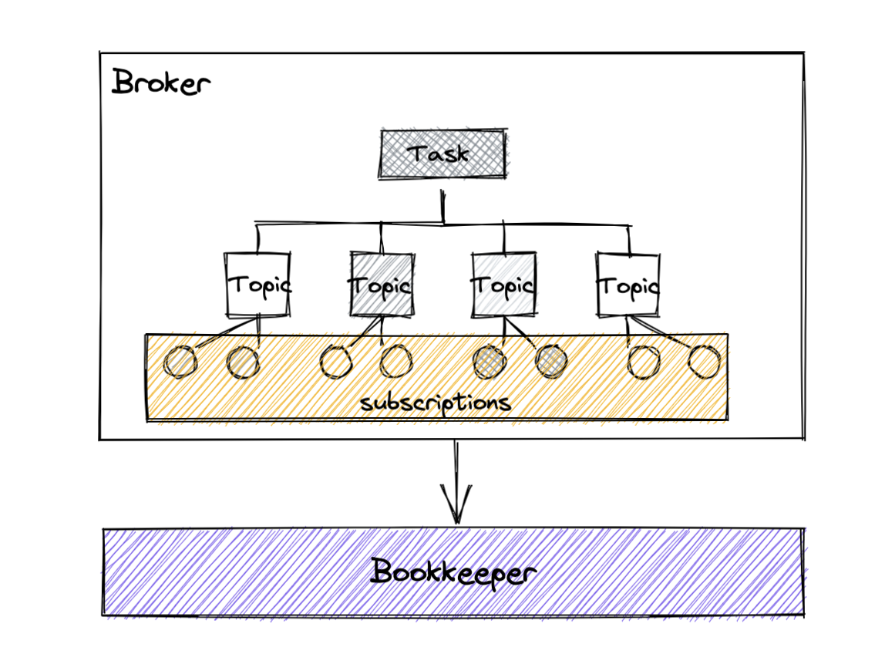

引言
在看了 你真的了解Pulsar的消息保留、积压、TTL策略吗 后，相信有不少对技术充满热情的小伙伴会疑惑，Pulsar的TTL又是怎么去失信的呢？今天就让我们一起来看看吧
在看下面的文章时我们要带着以下几个问题
- TTL是什么时候触发的
- TTL机制被触发后会发生什么
- 过期的消息会立马被删除吗
整体流程
在跟踪源码前先看看这张图，每个Broker内部都会有一个周期定时线程任务，每隔一段时间都会触发TTL任务。TTL任务会轮询当前Broker所管理的所有Topic中的所有订阅者，因为每个订阅者都会在Broker维护一个消费游标，因此Broker会根据用户配置的过期时间到轮询检查游标，看看有哪些消息是没被消费但是已经过了TTL的并会将游标移动到其的左侧(从实现的层面相当于表示它已经被消费了)，从而达到这些过了TTL的消息允许被删除的效果，最终再将游标的信息持久化到Bookkeeper中进行保存。

触发TTL流程
那么直接来跟踪下触发TTL的流程吧，先从Broker的启动方法start开始看。可以看到启动的时候还会开启一系列定时任务，这里只看TTL相关的，跟踪进去startMessageExpiryMonitor方法可以看到messageExpiryMonitor其实是JDK提供的线程池ScheduledExecutorService类，在这里通过scheduleAtFixedRate方法周期性的执行过期任务检测，间隔从Broker配置中进行读取的，默认是每隔5分钟一次
1
2
3
4
5
6
7
8
9
10
11
12
13
14
15
16
17
18
19
|
public void start() throws Exception {
....
this.startInactivityMonitor();
//启动定时消息过期检测任务(TTL)
this.startMessageExpiryMonitor();
this.startCompactionMonitor();
this.startConsumedLedgersMonitor();
this.startBacklogQuotaChecker();
this.updateBrokerPublisherThrottlingMaxRate();
this.updateBrokerDispatchThrottlingMaxRate();
this.startCheckReplicationPolicies();
this.startDeduplicationSnapshotMonitor();
}
protected void startMessageExpiryMonitor() {
int interval = pulsar().getConfiguration().getMessageExpiryCheckIntervalInMinutes();
messageExpiryMonitor.scheduleAtFixedRate(this::checkMessageExpiry, interval, interval,
TimeUnit.MINUTES);
}
|
TTL启动流程
通过上一节可以看到Pulsar的TTL触发就是通过JDK的定时线程池来实现的，Broker会周期性的调用checkMessageExpiry方法进行处理，因此现在就从这个方法进行跟踪，可以看到最终会调用到Topic的checkMessageExpiry方法
1
2
3
4
5
6
7
8
9
10
11
12
13
|
public void checkMessageExpiry() {
//进去看看forEachTopic的实现
forEachTopic(Topic::checkMessageExpiry);
}
public void forEachTopic(Consumer<Topic> consumer) {
//topics是Broker维护的一个Map结构，用于记录当前Broker所维护的Topic信息
//这里使用了Java8的Consumer，相当于闭包的设计，让内部的所有Topic都执行checkMessageExpiry方法
topics.forEach((n, t) -> {
Optional<Topic> topic = extractTopic(t);
topic.ifPresent(consumer::accept);
});
}
|
由于Topic只是接口，因此我们看它最常用的实现类也就是我们熟悉的PersistentTopic类的实现
1
2
3
4
5
6
7
8
9
10
11
12
13
14
15
16
17
18
19
20
21
22
23
24
25
26
27
28
29
30
31
32
33
34
35
36
37
38
39
40
41
42
43
44
45
46
47
48
49
50
51
52
53
54
55
56
57
58
59
60
61
62
63
64
65
66
67
68
69
70
71
72
73
|
public void checkMessageExpiry() {
//从topic配置中获取消息的TTL配置，这个跟上面的配置是有区别的，这里代表的是消息的有效期
int messageTtlInSeconds = topicPolicies.getMessageTTLInSeconds().get();
//通过这里的逻辑可以知道如果配置成0就不会过期
if (messageTtlInSeconds != 0) {
//循环调用当前Topic订阅者检测过期
subscriptions.forEach((__, sub) -> {
if (!isCompactionSubscription(sub.getName())) {
//进行具体的检测动作，从这里继续跟踪
sub.expireMessages(messageTtlInSeconds);
}
});
}
}
public boolean expireMessages(int messageTTLInSeconds) {
//获取当前积压消息的条数(指的就是未被消费的消息条数)
long backlog = getNumberOfEntriesInBacklog(false);
//如果没有消息积压就代表所有消息都被成功消费并且游标此时已经处于最左端，因此没必要再做TTL的检测了
if (backlog == 0 || (dispatcher != null && dispatcher.isConsumerConnected()
&& backlog < MINIMUM_BACKLOG_FOR_EXPIRY_CHECK
&& !topic.isOldestMessageExpired(cursor, messageTTLInSeconds))) {
// don't do anything for almost caught-up connected subscriptions
return false;
}
this.lastExpireTimestamp = System.currentTimeMillis();
//更新过期消息的下标，从这里继续跟踪
return expiryMonitor.expireMessages(messageTTLInSeconds);
}
public boolean expireMessages(int messageTTLInSeconds) {
....
// 这里进去进行过期检查
checkExpiryByLedgerClosureTime(cursor, messageTTLInSeconds);
....
}
private void checkExpiryByLedgerClosureTime(ManagedCursor cursor, int messageTTLInSeconds) {
//参数校验，可是这里为什么又做了小于0的判断，而外层只判断了等于0，可否用统一的参数校验工具进行校验呢？
if (messageTTLInSeconds <= 0) {
return;
}
if (cursor instanceof ManagedCursorImpl managedCursor) {
ManagedLedgerImpl managedLedger = (ManagedLedgerImpl) managedCursor.getManagedLedger();
//获得游标当前标记的可删除位置
Position deletedPosition = managedCursor.getMarkDeletedPosition();
//获取当前未被成功消费的积压日志信息，按Ledger进行排序
SortedMap<Long, MLDataFormats.ManagedLedgerInfo.LedgerInfo> ledgerInfoSortedMap =
managedLedger.getLedgersInfo().subMap(deletedPosition.getLedgerId(), true,
managedLedger.getLedgersInfo().lastKey(), true);
MLDataFormats.ManagedLedgerInfo.LedgerInfo info = null;
// 查询最接近现在的第一个未过期Ledger，那么其上一个Ledger一定是过期的并且其之前的都是过期的
for (MLDataFormats.ManagedLedgerInfo.LedgerInfo ledgerInfo : ledgerInfoSortedMap.values()) {
if (!ledgerInfo.hasTimestamp() || !MessageImpl.isEntryExpired(messageTTLInSeconds,
ledgerInfo.getTimestamp())) {
break;
}
info = ledgerInfo;
}
//如果info不为空说明一定存在已经处于过期的Ledger也就是过期的消息集合体
if (info != null && info.getLedgerId() > -1) {
//获取具体过期的位置
PositionImpl position = PositionImpl.get(info.getLedgerId(), info.getEntries() - 1);
if (((PositionImpl) managedLedger.getLastConfirmedEntry()).compareTo(position) < 0) {
findEntryComplete(managedLedger.getLastConfirmedEntry(), null);
} else {
//这里进去检查过期位置
findEntryComplete(position, null);
}
}
}
}
|
通过上面的代码跟踪可以看到在获取到过期的消息位置后，最终调用了PersistentMessageExpiryMonitor类的findEntryComplete方法，那么咱们接下来跟着进去看看都发生了哪些有意思的事情吧
1
2
3
4
5
6
7
8
9
10
11
12
13
14
15
16
17
18
19
20
21
22
23
24
25
26
27
28
29
30
31
32
33
34
35
36
37
38
39
40
41
42
43
44
45
46
47
48
49
50
51
52
53
54
55
56
|
public void findEntryComplete(Position position, Object ctx) {
....
//通过方法命名可以推测是通过标记游标的删除位置到达到TTL的效果，继续跟踪进去看看
cursor.asyncMarkDelete(position, cursor.getProperties(), markDeleteCallback,
cursor.getNumberOfEntriesInBacklog(false));
....
}
public void asyncMarkDelete(final Position position, Map<String, Long> properties,
final MarkDeleteCallback callback, final Object ctx) {
....
//异步标记删除位置
internalAsyncMarkDelete(newPosition, properties, callback, ctx);
}
protected void internalAsyncMarkDelete(final PositionImpl newPosition, Map<String, Long> properties,
final MarkDeleteCallback callback, final Object ctx) {
....
synchronized (pendingMarkDeleteOps) {
switch (STATE_UPDATER.get(this)) {
....
case Open:
if (PENDING_READ_OPS_UPDATER.get(this) > 0) {
pendingMarkDeleteOps.add(mdEntry);
} else {
//进行标记删除
internalMarkDelete(mdEntry);
}
break;
....
}
}
}
void internalMarkDelete(final MarkDeleteEntry mdEntry) {
....
//持久化游标信息到Bookkeeper
persistPositionToLedger(cursorLedger, mdEntry, cb);
}
void persistPositionToLedger(final LedgerHandle lh, MarkDeleteEntry mdEntry, final VoidCallback callback) {
PositionImpl position = mdEntry.newPosition;
PositionInfo pi = PositionInfo.newBuilder().setLedgerId(position.getLedgerId())
.setEntryId(position.getEntryId())
.addAllIndividualDeletedMessages(buildIndividualDeletedMessageRanges())
.addAllBatchedEntryDeletionIndexInfo(buildBatchEntryDeletionIndexInfoList())
.addAllProperties(buildPropertiesMap(mdEntry.properties)).build();
....
requireNonNull(lh);
byte[] data = pi.toByteArray();
//调用Bookkeeper客户端将游标信息写入
lh.asyncAddEntry(data, (rc, lh1, entryId, ctx) -> {
....
}, null);
}
|
通过上面的跟踪可以看得到最终是通过Bookkeeper的客户端对象LedgerHandle的asyncAddEntry方法将游标信息持久化到了Bookkeeper，这里就不继续跟踪下去了，因为已经到了TTL左右范围的尽头了。
总结
以上就是Pulsar中TTL的实现源码流程，我在这个过程中尽量省略了一些非必要的逻辑，主要是跟踪了主线，像一些地方也是值得跟踪的，感兴趣的伙伴可以自行跟踪。同时在这里我们可以看到，TTL过程只移动了游标位置并不涉及到数据的删除，说明在Pulsar的设计中将两者进行了分离，这是一种很好的职责设计思路，各自负责自己的一那部分。一方面在程序维护时可以避免改动引起一些相关性不那么大的影响，另一方面对于程序执行的整体性能来说也是比较高效的。